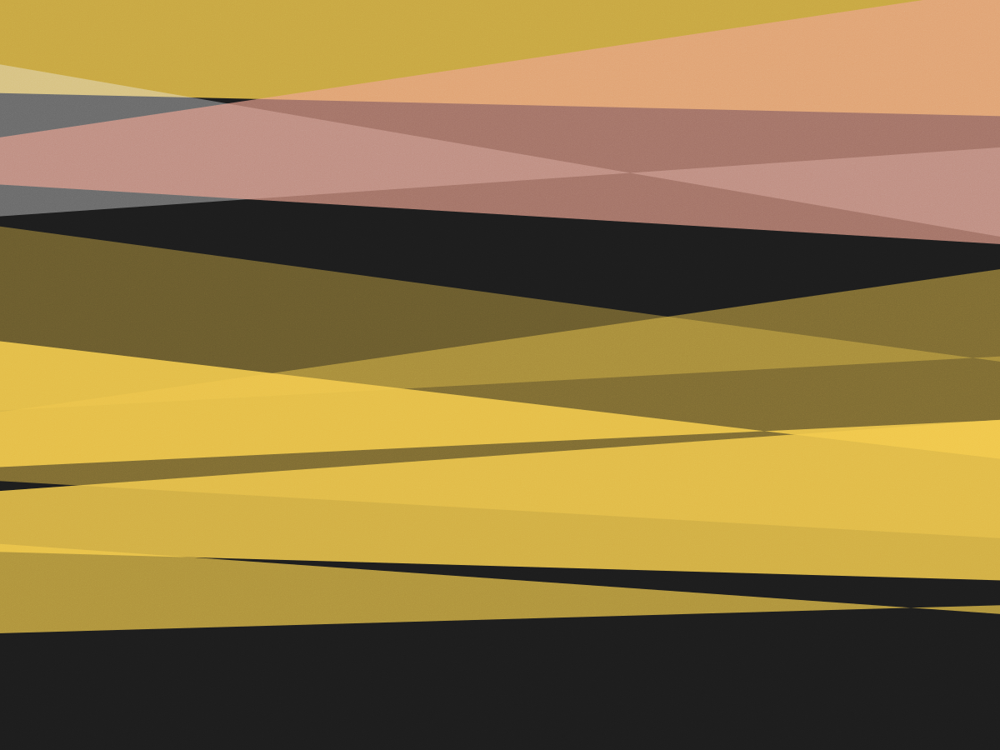

Pinheiros · desde 2019
Quarenta pares.
Nenhum por
causa da cor
A prateleira é curta de propósito. Cada modelo entra depois de rodar com alguém da equipe por pelo menos 120 km — e sai quando a marca muda a entressola sem avisar. O resto é conversa de pisada, drop e quilometragem.
Marcar teste de pisada
Como um par entra aqui
Três cortes antes da prateleira. Se falhar em qualquer um, não entra — mesmo que venda bem em outro lugar.
-
Entressola
Cortamos um par no meio para ver a espuma. Se a camada de suporte é só tinta, a gente vê. Modelo com entressola fina demais para 20 km/semana não entra.
-
Rodagem real
Alguém da equipe corre 120 km no par antes de aprovar. Anotamos o que cede primeiro: colarinho, forro, sola. É o teste que a ficha técnica da marca não faz.
-
Reposição
Se a marca troca a versão sem mudar o nome, o par é reaprovado do zero. Já perdemos dois modelos assim — e preferimos perder a venda.
O que está na prateleira agora
Preço de loja, sem promoção permanente. Quando o modelo é descontinuado, avisamos quem já comprou para estocar a numeração.
| Modelo | Drop | Peso (42) | Indicado para | Preço |
|---|---|---|---|---|
| Norte 4 | 8 mm | 248 g | Treino diário, 5 a 10 km | R$ 349 |
| Norte 4 Carbon | 8 mm | 236 g | Prova de rua, até meia maratona | R$ 549 |
| Vale 2 | 6 mm | 262 g | Rodagem longa em asfalto | R$ 429 |
| Vale 2 Trail | 6 mm | 284 g | Trilha leve, cascalho | R$ 489 |
| Serra 1 | 4 mm | 218 g | Intervalado e pista | R$ 599 |
| Serra 1 Wide | 4 mm | 226 g | Mesma proposta, bico largo | R$ 599 |
Numerações 34 ao 46 na loja. Do 47 ao 49, só por encomenda — leva de 8 a 12 dias.
Trinta minutos na esteira
O teste é gratuito e não exige compra. Você corre, a gente filma de dois ângulos e olha junto — o vídeo é seu, fica no seu celular.
-
Aquecimento e histórico
Dez minutos de trote e quatro perguntas: quilometragem por semana, pace, lesão nos últimos doze meses e o que você usou antes.
-
Corrida filmada
Dois minutos em cada ritmo — leve, moderado e forte. Filmagem lateral e por trás, em câmera lenta.
-
Três pares para comparar
Você corre em três modelos diferentes e sente a diferença de drop e de firmeza com o mesmo esforço.
Loja e horários
Rua dos Pinheiros, 1.844 — a duas quadras do metrô Fradique Coutinho. A esteira fica no fundo; o teste precisa de horário marcado.
| Segunda a sexta | 10h às 20h |
|---|---|
| Sábado | 9h às 18h |
| Domingo | Fechado |
| Teste de pisada | Ter a sáb, até 2 h antes de fechar |
Traga o tênis velho
A gente olha a sola gasta antes de qualquer recomendação. O desgaste mostra o que a ficha do modelo não mostra: como você apoia e o que já cedeu.
Troca em 30 dias com a nota. Sem uso na rua, com a etiqueta.